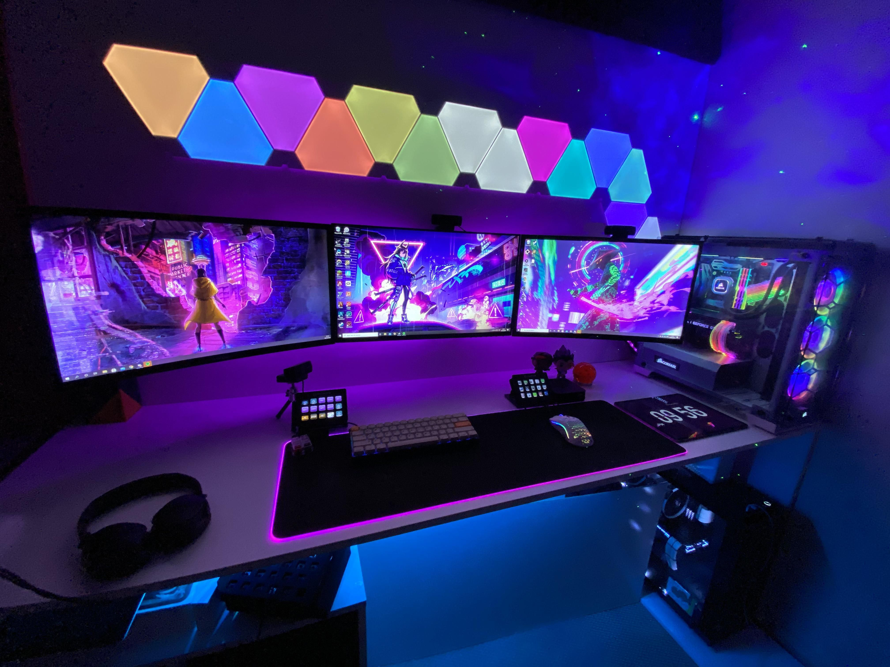

About ShopPC
ShopPC is a computer retail business founded on the values of convenience, accessibility, and excellent customer service. Believe it or not, this leader in local technology retail had pretty humble beginnings – when five friends who were passionate about tech hunted down secondhand PCs in the Tipid PC online group to resell at decent rates. ShopPC officially got its name when we opened our first store in Makati in September 2009. A play on the expression “Shop-easy”, the name was a key step in building a brand that promises reliable services and quality products. Eventually, we shifted to selling brand new products at accessible prices.
We strive to enhance the Filipino experience in computer essentials through technology-driven & value for money solutions, powered by our technical expertise, passion for innovation, and customer-centric philosophy.
ShopPC is committed to being the most trusted partner of Filipino households and growing businesses for computer essentials by providing exceptional customer experience built on ease, technical expertise, and empathy.
What to Expect from ShopPC?
Today, as we serve you in-store and online, our dedication to growth also extends to each and every customer. We strive to provide solutions, reliable services, and affordable but quality technologies that will enhance the lives of our customers and community. As we move to greater heights, giving you the best customer experience is still our number one goal.